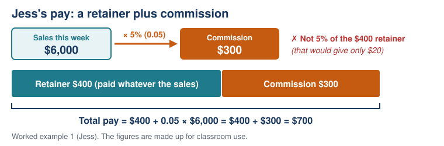

Lesson 1: Ways of Earning Money
Year level: Year 10 (middle ability set)Duration: 60 minutesFocal concept/topic: Earning money: wages, salary, commission, piecework and royalties | |
Lesson aim: Introduce the unit with the question "Which job pays the most?", find out what students already know with a diagnostic quiz, and teach the main ways people are paid. | |
Learning intention: We are learning to identify the different ways people are paid and to calculate earnings from a wage, commission, piecework and royalties. Success criteria: □ I can describe the difference between a wage, a salary, commission, piecework and a royalty | |
Syllabus outcomes and content: NSW Mathematics K–10 Syllabus (NESA, 2022)
| Working Mathematically indicators:
|
ICT:
| LIT:
|
Prerequisite knowledge:
| Resources:
|
Before the lesson:
| |
Labels used in this plan: WM Working Mathematically LIT Literacy ICT Technology AfL Assessment for learning AoL Assessment of learning
Key teacher question → Expected: suggested student response. Self-designed WM indicators are in italics.
Teaching sequence
| Steps & timing | Teaching & learning activities | ||||||||||||||||||||||||||||||||||||||||||||||||||||
|---|---|---|---|---|---|---|---|---|---|---|---|---|---|---|---|---|---|---|---|---|---|---|---|---|---|---|---|---|---|---|---|---|---|---|---|---|---|---|---|---|---|---|---|---|---|---|---|---|---|---|---|---|---|
| ORIENTATION0–8 minHook: Which job pays the most? |
Teacher
Students
| ||||||||||||||||||||||||||||||||||||||||||||||||||||
| ORIENTATION8–18 minDiagnostic quiz |
Teacher
Students
| ||||||||||||||||||||||||||||||||||||||||||||||||||||
| ENHANCING18–24 minLearning intention, wage and salary |
Teacher
Students
| ||||||||||||||||||||||||||||||||||||||||||||||||||||
| ENHANCING24–37 minWorked examples: commission, piecework, royalties |
Teacher
Worked example 1: commission. Jess sells phones. She is paid a retainer of $400 per week plus 5% commission on her sales. This week she sold $6,000 of phones.
 Worked example 2: piecework. Tom prints T-shirts and is paid $1.80 for each shirt. On Tuesday he printed 240 shirts.
Worked example 3: royalty. An author earns a 10% royalty on each book sold. The book sells for $25 and 3,000 copies are sold.
Students
| ||||||||||||||||||||||||||||||||||||||||||||||||||||
| ENHANCING37–50 minYou do |
Teacher
Students
Teacher note: NESA lists commission on artworks among the Aboriginal and Torres Strait Islander histories and cultures connections for this content (NESA, 2022). Desart is the association of Central Australian Aboriginal art centres. The $1,800 and the 25% are made up. | ||||||||||||||||||||||||||||||||||||||||||||||||||||
| SYNTHESIZING50–60 minBack to the hook, and exit ticket |
Teacher
Exit ticket (a) Match each term to its meaning: salary, commission, piecework, royalty.
(b) Noah earns $350 per week plus 4% commission on his sales. This week he sold $5,000 of goods. What is his total pay? Success criteria: tick the ones you can now do. For any you cannot tick, write the step that is still unclear. Students
After the lesson
| ||||||||||||||||||||||||||||||||||||||||||||||||||||
Worked solutions
| Task / question | Worked solution |
|---|---|
| Hook | No single answer. It depends on hours worked, sales made, shirts printed and books sold. The jobs also need to be compared over the same length of time. |
| Diagnostic Q1–Q8 | Q1 0.05. Q2 $60. Q3 $36. Q4 $22.50. Q5 3.5 hours. Q6 52. Q7 $150. Q8 4 + 3.5 + 5 = 12.5 hours |
| Barista's wage | $25 × 20 = $500 |
| Worked example 1 | 0.05 × $6,000 = $300. $400 + $300 = $700 |
| We do (Jess, $9,000) | 0.05 × $9,000 = $450. $400 + $450 = $850 |
| Worked example 2 | $1.80 × 240 = $432 |
| Worked example 3 | 0.10 × $25 = $2.50 per book. $2.50 × 3,000 = $7,500 |
| Q1 | $23.50 × 15 = $352.50 |
| Q2 | 0.03 × $28,000 = $840 |
| Q3 | $3.20 × 85 = $272 |
| Q4 | $0.004 × 250,000 = $1,000 |
| Q5 | $820 − $400 = $420 commission. $420 ÷ 0.05 = $8,400 in sales |
| Extension | 0.25 × $1,800 = $450 kept by the centre. $1,800 − $450 = $1,350 to the artist |
| Exit ticket (a) | salary: a set amount per year. commission: a percentage of the value of sales. piecework: a payment for each item produced. royalty: a payment to a creator each time their work is sold or used |
| Exit ticket (b) | 0.04 × $5,000 = $200. $350 + $200 = $550 |
Adjustments and anticipated misconceptions
| Misconception | Why students think this | How this lesson addresses it |
|---|---|---|
| 5% is written as 0.5 | They move the decimal point once instead of dividing by 100. | Diagnostic Q1 finds it early. Worked example 1 asks "Why 0.05 and not 0.5?" |
| Commission is worked out on the retainer, or on the total pay | "Commission" is a new word, and the retainer is the first number they see. | Key question "Is the 5% worked out on the $400 or the $6,000?". The retainer–commission diagram shows the 5% coming from the sales. The teacher checks this while circulating. |
| "Commission" and "royalty" mean the same as a wage | Both words are new and abstract, and students have mostly seen hourly pay. | Each term gets a vocabulary card with a worked example and a photo. The exit ticket matching task checks the difference. |
| A royalty is always a percentage | Worked example 3 uses 10% of the price, so students expect every royalty to work that way. | The key question "How is a royalty like commission?" names both kinds. Q4 (a set amount for each stream) checks it. |
| A salary goes up when you work extra hours | In casual jobs, more hours always means more pay. | Key question about the office assistant working 5 extra hours. |
| Students who need… | Adjustment |
|---|---|
| more support | Use the completed vocabulary cards as worked examples. Give a partly set-out working line for Q2 and Q5 ("Commission = ___% of $___"). |
| more challenge | Q5 (working backwards) and the art-centre extension, where the commission is taken away instead of added. |
| language and literacy support, including EAL/D | The vocabulary cards pair each term with a picture and an example. The job ads are read aloud together. |
Vocabulary
| Term | Definition | Image |
|---|---|---|
| income | Money a person receives, for example from working | |
| wage | Pay worked out as hours worked × hourly rate | |
| hourly rate | The amount paid for each hour of work | |
| salary | A set amount of pay for a year, paid in equal parts (for example weekly or monthly) | |
| per annum (p.a.) | Per year | |
| commission | Pay that is a percentage of the value of what a person sells | |
| retainer | A set amount paid each week on top of commission, whatever the sales | Diagram in Worked example 1 |
| piecework | Pay for each item produced or each task completed | |
| royalty | A payment to the creator of a book, song or other work each time it is sold or used |
Image credits:
- wage: "Barista making coffee", rawpixel, CC0 1.0. https://www.rawpixel.com/image/5904500/photo-image-public-domain-person-kitchen
- salary: "Irene's office, across the asile from me" by wbaiv, CC BY-SA 2.0. https://www.flickr.com/photos/9998127@N06/5833123954
- commission: "House For Sale, Real Estate SOLD sign" by myguys.nova, CC BY 2.0. https://www.flickr.com/photos/124808053@N07/14683431173
- piecework: "Aunties Lay Leong, Susan and Julie with buckets of cherries" by avlxyz, CC BY-SA 2.0. https://www.flickr.com/photos/10559879@N00/2079822283
- royalty: "Books" by NeilGHamilton, CC BY 2.0. https://www.flickr.com/photos/34800120@N08/6819921489
Sources acknowledged in this lesson
- Desart. (n.d.). About art centres. Retrieved October 7, 2026, from https://desart.com.au/member-art-centres/about-art-centres/
- NSW Education Standards Authority. (2022). Mathematics K–10 syllabus: Stage 5, Financial mathematics A. https://curriculum.nsw.edu.au/learning-areas/mathematics/mathematics-k-10-2022/content/stage-5/facb3aa952
- The job ads, names and figures in this lesson are made up for classroom use.